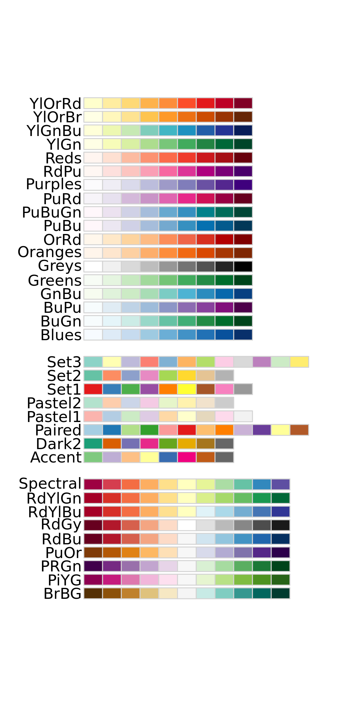

6 Week 6: Sampling, probability and binomial tests
Written by Tom Beesley & John Towse
6.1 Pre-lab work
Ensure you have watched the lecture for Week 6.
There is a learnr tutorial to complete which will help you to think about binomial tests. You : You can find it here.
Set up a new folder in RStudio and upload the files from the Week 6 zip file
If you create a folder and upload the file into RStudio before the lab class you’ll be even more ready to follow along!
6.2 Card sampling task

In the first task this week we will look at the sampling of events and we will apply the basic statistical test of the binomial test: binom.test()
Each table has a set of cards. These will be 13 red cards and 13 black cards - please check your set to ensure you have the right number of each colour (it doesn’t matter what suit the cards are).
In this task we will be drawing samples from the deck, and trying to tell whether the deck is biased towards red or black. Think of the cards as the population of scores out there in world, and when you can only see back of the cards, that data is unobserved.
As an experimenter we are trying to estimate what is true about the world, and in order to do this we need to draw a sample. So each time you draw a card, you are observing one data point from the population, and based on a collection of data (the sample) you are going to draw an inference about what is true about the population.
6.2.1 Set up and instructions:
One person on each table should act as the “world” (the dealer). Congratulations, you are God. That is, this person will determine what is true about the state of things in the world. In this example, that means they control what is contained in the deck of cards. For each experiment, secretly remove some cards from the deck and place those face down. It’s important that no one sees what these cards are. For example, you might take out 5 red cards, so that 13 black and 8 red are left; this deck is now biased to black. Or you might take out 3 red and 3 black; this deck is not biased.
The remaining people (1 or more) will act as the experimenters. Your job is to draw samples and work out whether you think the deck is biased or not towards either red or black.
For each experiment, go through the following steps:
The world removes some cards from the full deck (the number and colour of the cards removed is up to them) and they place these face down on the table. They shuffle the deck ready to start the “experiment”.
The experimenters “pre-register” their sample size. That is, they state how many cards they are going to draw.
Draw samples one at a time. Importantly - make sure you replace the cards each time and the world/dealer should give the pack a quick shuffle.
Mark down whether the card was red or black in your logbook
The world should shuffle the cards after each draw. Repeat 2.3 and 2.4 until you have reached your sample size.
At the end of each experiment, the experimenters should draw a conclusion based initially on their own “gut feeling” about the data. Do you think the deck was biased towards red, black, or was it unbiased?
As a group, use RStudio to run a
binom.test()to provide a statistical result (you can do this in the console, or create a new script to save your tests and results - it’s up to you). Was this result unusual? How likely were the data given the null hypothesis? Note down the p value that this test gives you.The “world” can then reveal the hidden cards. Was the deck actually biased or not? How does this sit with a) your initial conclusions, and b) the result of the binomial test?
Repeat all steps in part 3 again for a new experiment, making sure that you try different parameters for the experiment. So vary a) how many cards are removed from the deck, b) the combination of cards removed from the deck, and c) the pre-registered sample size. Feel free to swap the roles around.
Once you’ve conducted a few experiments, discuss on your table the results you found. It might be useful to think about the following things:
were there times when your intuitions were different to the statistical result? For example, you were sure there was a bias, but in fact the statistics told you this was not that unusual (p was > .05)?
were there times when the deck was actually biased, but you failed to prove this with your experiment (you failed to see p < .05)? Do you remember what this type of error is called?
were there times when the deck was not biased, but the test result suggested it was (p < .05)? Do you remember what type of error this is called?
6.3 RStudio tasks
For the second exercise today we will take a look at the phone data again. If you haven’t already, set up a new folder for Week 6 and upload the data from the Week 6 zip (see pre-lab instructions).
6.3.1 Read in the csv data file
You should know how to do this by now. But if not, try searching “csv” at the top. Remember that what you name your data set is important for the following commands.
6.3.2 Take a look at the data
There are lots of ways to get a quick look at the data. Here are a few useful ones (some you’ve come across, some that might be new): glimpse(), summary(), View(), head().
6.3.3 Create a boxplot of the phone data
Complete the code to create a boxplot of the estimated phone use. Note that you can put the boxes on either the x or you y axis. Copy and paste the code and edit it so you can also plot the actual phone use.
6.3.4 Create a density plot and/or hisotgram of the phone data
It’s very easy to convert the boxplot code into either a density plot (geom_density()) or a histogram (geom_histogram()). Have a play around with these different types of graphs. Which one communicates the spread of the data most clearly? Is it better to plot these on the x or y axis?
6.3.5 Plot the relationship between estimated and actual phone use
So far we’ve looked at the phone use estimate and the actual phone use separately. But if people are at all accurate in their estimates, we’d expect these two things to be related (those people who use their phone more probably know they do). Let’s use a scatter plot to see if this relationship exists in our data. In ggplot() we can do with with geom_point(). Each point on the graph needs an x and y value, so with the code you’ve been given, you just need to add in the two variables we want to plot.
- Is there a relationship between these variables?
- How would you describe this relationship in words?
6.3.6 Binomial test of the accuracy of phone use estimates
So did people overestimate or underestimate their phone use on average? We have given you a column called accuracy which simply says whether each participant underestimated or overestimated. Add your dataset name to this code to use the count() function to get the total who overestimated and underestimated. With these totals, you have enough information to run a binomial test:
- for this test focus on the totals for “underestimate” and “overestimate” (for simplicity we can ignore people who were “accurate” and the NA values)
- These give you your first two parameters for
binom.test() - to get the probability, we consider the null hypothesis
- that is what’s the probability of overestimating or underestimating under the null hypothesis?
- what is the result of the binomial test?
- You can also include the UK_region within your count, and then run binomial tests on these sub-groups. Do you find any interesting reuslts? What issues might we have with running the
binom.test()on these sub groups?
6.3.7 More things to try with your scatter plot
We can customise our plot even further:
- Try adding/changing the
size =withingeom_point()to make the points bigger or smaller (values from .1 to 30) - Try adding/changing the
alpha =withingeom_point()to make the points transparent (try values between 0.1 and 1) - try adding
colour =withinggplot(aes( ))to map the colour to the ‘UK_region’ variable. - you can change the colours used by ggplot by adding
+ scale_colour_brewer()to your plot code. Within this, try setting the pallete parameter to one of these options (e.g.,scale_colour_brewer(palette = "Set3"))

- remember you can add labels using
+labs() - remember you can set a new theme, such as
+ theme_minimal()
6.4 Week 6 Quiz
You can access a set of quiz questions related to this week here.